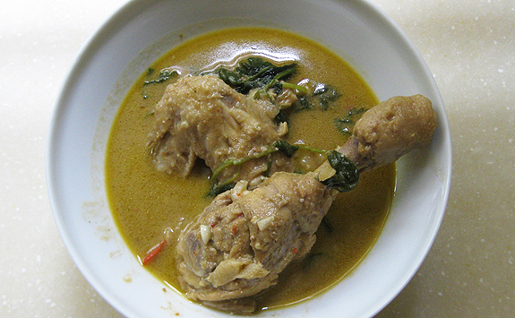

Chicken/Turkey - 1 lb (cut into pieces)
Onion - 1 (sliced)
Kuskus - 2 tbsp
Cashews - 4
Coriander seeds - 1 tbsp
Green chilly - 5-7
Cumin seeds - 1 tbsp
Coconut - 1/2 cup (grated)
Yogurt (Curd) - 1/2 cup
Ginger-Garlic paste- 2 tsp
Cardamon - 3
Fennel seeds - ¼ tsp
Bay leaf - 1
Cloves - 2
Cinnamon sticks - 1
Oil - 2 tbsp
Salt - to taste
Cilantro - for garnish
Soak kuskus in 1 cup warm water for 10 minutes and then grind it with green chillies, coriander seeds, cumin seeds, cashews,cardamom and coconut. Keep it aside.
Heat oil in a deep pan. Splutter fennel seeds.Add the bay leaf, cloves and cinnamon.
Add sliced onions and fry them till they are translucent. Next add the ginger-garlic paste and saute till the raw smell vanishes.
Add the chicken/turkey pieces and saute for 2 minutes. Next add 1 cup water, yogurt and salt to it. Cover and cook till the chicken is almost done.
At this stage add the ground paste and add the water required. Check for salt and let the kurma simmer for 5 minutes.
Garnish with cilantro. Chicken (or Turkey) kurma is ready to be served.